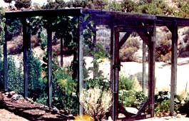

In our garden we were constantly losing vegetables to the high desert critters: mice, kangaroo rats, pack rats, cotton-tail rabbits, jack rabbits, lizards, birds, squirrels and the occasional deer. So my husband built a completely enclosed cage, 20' x 12 1/2', with a strong center post (see photo). The sides and top are covered with half-inch hardware cloth so the pollinators can still get inside. I can now grow enough vegetables for the two of us with some left over. This year, my planting consists of summer and winter squash, tomatoes, four kinds of peppers, cantaloupe, green beans, eggplant, and decorative gourds interplanted with herbs, lettuce, radishes, cosmos and marigolds. The only pests I have now are grasshoppers, which favor the cosmos and do little harm.
ADRIENNE KNUTE
Cima, California
|
 ADRIENNE KNUTE Cima, California |
|
|